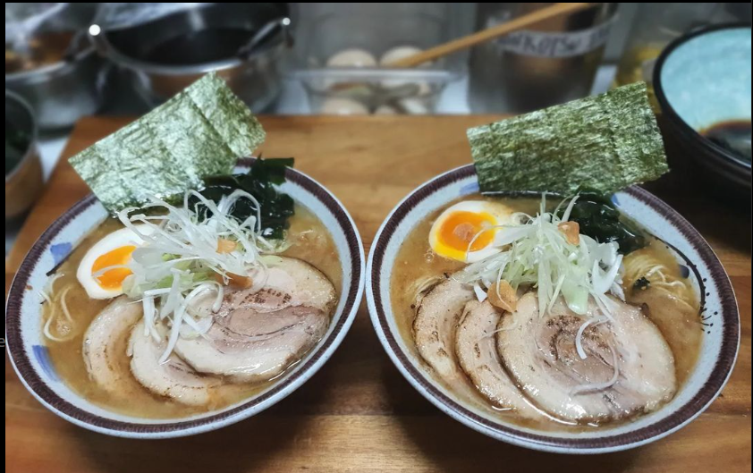
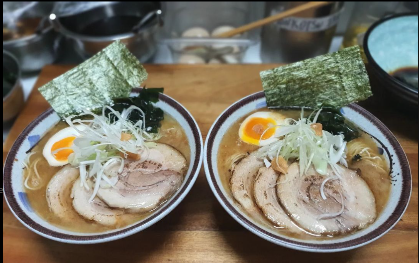

Bienvenidos a Nuestro Izakaya
Nos enorgullece ser el primer izakaya en la región del Maule, ofreciendo una experiencia auténtica de la cocina japonesa. En ANAGO izakaya, nos especializamos en platos tradicionales que capturan la esencia de la gastronomía japonesa, preparados con ingredientes frescos y de alta calidad.
Nuestra cocina casera destaca por su autenticidad y dedicación a las técnicas culinarias tradicionales. Desde nuestros sabrosos platos a la parrilla hasta los delicados sushi y sashimi, cada bocado es una celebración de los sabores japoneses. También ofrecemos una selección exclusiva de tragos y bebidas que complementan perfectamente nuestras comidas.
Visítanos y disfruta de una experiencia culinaria única en un ambiente acogedor y auténtico. Nuestros horarios de atención son:
- Martes a Jueves: 13:00hrs a 15:00hrs / 18:30hrs a 22:30hrs
- Viernes y Sábado: 13:00hrs a 23:30hrs
- Domingo y Lunes: Cerrado